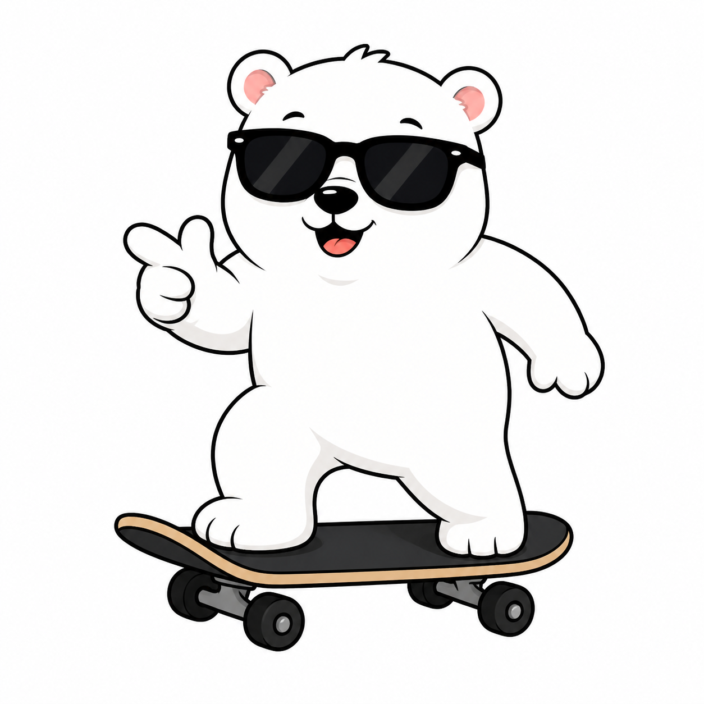

MUNDO ABERTO
O Mundo Gelado do Theo
Um mundo que nunca é igual. Cada vez que você entra, o Theo encontra pessoas novas, em lugares novos, com situações diferentes pra resolver — do seu jeito, no seu tempo. Sem perder, sem relógio. Só conexões.

Como funciona
Você explora a vila gelada e encontra moradores. Cada um vive uma situação social real. Você escolhe como o Theo responde — e o urso reage à sua escolha. Não existe resposta que "queima o jogo": toda escolha ensina algo.
ExploreSetas/WASD no computador, ou o direcional na tela no celular.
ConverseChegue perto de um morador e aperte E (ou o botão Falar).
ConecteBoas escolhas viram elos de amizade e pontos de experiência.
Sempre novoA IA monta um mundo diferente a cada vez que você entra.
 O Theo está preparando um mundo só pra você
montando a vila...
O Theo está preparando um mundo só pra você
montando a vila...